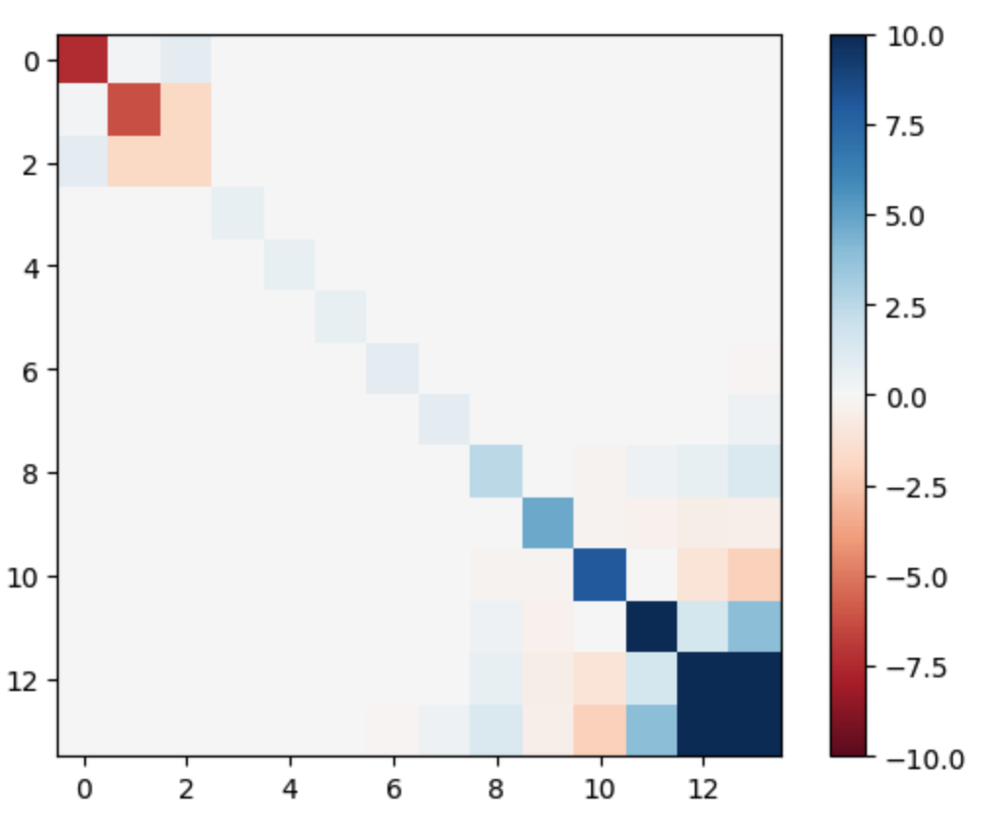
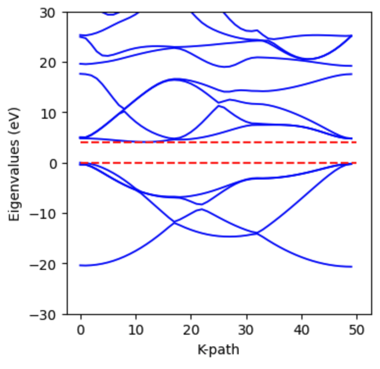

Band Structure Calculation#
Note
A theoretical derivation of band structure calculations can be found in the tutorial Band Structure.
This tutorial demonstrates how to calculate the electronic band structure of a diamond crystal using jrystal. Band structure calculations typically involve two steps:
Computing the ground state electron density
Using this density to solve the Kohn-Sham equations at different k-points
We’ll focus primarily on the second step, showing how to calculate the band structure after obtaining the ground state density.
Step 1: Ground State Calculation#
First, let’s calculate the ground state properties of our diamond crystal.
Import the required packages:
import jax
import jax.numpy as jnp
import jrystal as jr
Configure the calculation parameters:
config = jr.config.get_config() # load default configuration.
config.crystal = "diamond"
# The crystal structure will be loaded from "geometry/diamond.xyz"
config.cutoff_energy = 100 # Approximately 2700 eV
config.grid_sizes = 48 # 48x48x48 FFT mesh grid
config.epoch = 10000
config.k_grid_sizes = 1 # Single K point (Gamma point)
config.smearing = 0.0001
config.optimizer_args = {"learning_rate": 1e-3}
Calculate the total energy:
total_energy_output = jr.calc.energy(config)
Now compute the ground state electron density:
crystal = total_energy_output.crystal
freq_mask = jr.grid.spherical_mask(
crystal.cell_vectors, jr.grid.proper_grid_size(config.grid_sizes), config.cutoff_energy
)
params_pw = total_energy_output.params_pw
coeff = jr.pw.coeff(params_pw, freq_mask)
params_occ = total_energy_output.params_occ
occupation = jr.occupation.idempotent(params_occ, crystal.num_electron, 1)
density_grid = jr.pw.density_grid(coeff, crystal.vol, occupation)
Step 2: Computing Kohn-Sham Eigenvalues#
Let’s start by calculating the eigenvalues at the Gamma point (k = 0). First, we need to set up our calculation grid:
g_vecs = jr.grid.g_vectors(crystal.cell_vectors, jr.grid.proper_grid_size(config.grid_sizes))
kpts = jr.grid.k_vectors(crystal.cell_vectors, jr.grid.proper_grid_size(config.k_grid_sizes))
Now we can compute the Kohn-Sham Hamiltonian matrix:
hamil_matrix = jr.hamiltonian.hamiltonian_matrix(
coeff, crystal.positions, crystal.charges, density_grid, g_vecs, kpts, crystal.vol, kohn_sham=True
)
The resulting Hamiltonian matrix has an interesting structure:
{kind=link}
Note
According to our research paper Li2024, the Hamiltonian matrix self-diagonalizes during free energy minimization. However, you might notice this matrix isn’t fully diagonal. This occurs because of electron occupation degeneracy in the core regions (occupation = 1) and high-energy bands (occupation = 0).
Let’s examine the occupation numbers:
print(jnp.sort(jnp.round(occupation, 2)))
>>> [0. , 0. , 0. , 0. , 0. , 0. , 0.07, 0.09, 1.89, 1.96, 1.99, 2. , 2. , 2. ]
Note
The value of 2 appears because in spin-restricted calculations, each band can hold two electrons with opposite spins.
To get the Kohn-Sham eigenvalues, we simply need to diagonalize the Hamiltonian matrix:
evals_gamma = jnp.linalg.eigvalsh(hamil_matrix[0])
print(evals_gamma)
>>> [-7.67813799, -7.65829657, -0.13900975, 0.60935214, 0.61061926,
0.61237885, 0.79693345, 0.80341756, 2.39194797, 4.57702582,
7.81532253, 17.31096626, 19.20340566, 56.55011329]
We can calculate the band gap at the Gamma point:
band_gap = (evals_gamma[6] - evals_gamma[5]) * jr._src.const.HARTREE2EV
print(f"The band gap at Gamma point is {band_gap:.4f} eV.")
>>> The band gap at Gamma point is 5.0220 eV.
Step 3: Band Structure Along a K-path#
To compute the full band structure, we need to calculate eigenvalues along a path through the Brillouin zone. This presents a challenge: we don’t have converged coefficients for k-points that weren’t in our original k-mesh.
We solve this using two strategies: 1. For each new k-point, we minimize the Hamiltonian matrix trace using the ground state density 2. We use the parameters from the previous k-point as initial values for the next point, improving convergence efficiency
Let’s implement this approach:
First, generate a k-path through high-symmetry points (Γ → X → L → Γ):
k_path = jr._src.band.get_k_path(crystal.cell_vectors, path="GXLG", num=50)
print(k_path[0:4])
>>> [[ 0.00000000e+00 0.00000000e+00 0.00000000e+00]
[-5.89079908e-18 5.48359699e-02 1.28296930e-17]
[-1.17815982e-17 1.09671940e-01 2.56593860e-17]
[-3.26677455e-17 1.64507910e-01 3.26677455e-17]]
Now let’s set up our optimization for the first k-point (Γ). We’ll define a trace function:
def hamil_trace(params):
coeff = jr.pw.coeff(params, freq_mask)
return jr.hamiltonian.hamiltonian_matrix_trace(
coeff, crystal.positions, crystal.charges, density_grid,
g_vecs, k_path[0:1], crystal.vol, kohn_sham=True
)
Set up the optimizer and create the optimization loop:
import optax
optimizer = optax.adam(learning_rate=1e-3)
opt_state = optimizer.init(params)
for i in range(1000):
grad = jax.grad(hamil_trace)(params)
updates, opt_state = optimizer.update(grad, opt_state)
params = optax.apply_updates(params, updates)
params_pw = total_energy_output.params_pw
# Define update step (JIT-compiled for speed)
@jax.jit
def update(params_pw, opt_state):
e_tot, grads = jax.value_and_grad(hamil_trace)(params_pw)
updates, opt_state = optimizer.update(grads, opt_state)
params_pw = optax.apply_updates(params_pw, updates)
return e_tot, params_pw, opt_state
# Run optimization
print("Starting optimization...")
for i in range(10000):
e_tot, params_pw, opt_state = update(params_pw, opt_state)
if (i+1) % 100 == 0:
print(f"Step {i+1:4d} | Hamiltonian Trace: {e_tot:.4f} Ha")
After optimization, compute the eigenvalues at the first k-point:
coeff= jr.pw.coeff(params_pw, freq_mask)
hamil_matrix = jr.hamiltonian.hamiltonian_matrix(
coeff, crystal.positions, crystal.charges, density_grid, g_vecs, k_path[0:1], crystal.vol, kohn_sham=True
)
evals_0 = jnp.linalg.eigvalsh(hamil_matrix[0])
print(evals_0)
>>> [-7.67815119, -7.65829707, -0.13902394, 0.60937034, 0.61061365,
0.61238018, 0.79523348, 0.79585523, 0.79619886, 1.26561079,
1.32554965, 1.54347084, 1.54436551, 1.5456989 ]
Let’s compare these eigenvalues with our earlier total energy calculation:
print(total_energy_output.evals_gamma)
>>> [-7.67813799, -7.65829657, -0.13900975, 0.60935214, 0.61061926,
0.61237885, 0.79693345, 0.80341756, 2.39194797, 4.57702582,
7.81532253, 17.31096626, 19.20340566, 56.55011329]
Notice that the lower eigenvalues match well, while higher energy values differ. This occurs because during the total energy calculation, high-energy bands quickly converge to zero occupation, stopping their coefficient updates.
Step 4: Computing the Full Band Structure#
Now we’ll calculate eigenvalues for all k-points along our path. First, define a helper function:
def get_evals(k_idx, params_pw):
def hamil_trace(params):
coeff = jr.pw.coeff(params, freq_mask)
return jr.hamiltonian.hamiltonian_matrix_trace(
coeff, crystal.positions, crystal.charges, density_grid,
g_vecs, k_path[k_idx:(k_idx+1)], crystal.vol, kohn_sham=True
)
opt_state = optimizer.init(params_pw)
coeff = jr.pw.coeff(params_pw, freq_mask)
@jax.jit
def update(params_pw, opt_state):
e_tot, grads = jax.value_and_grad(hamil_trace)(params_pw)
updates, opt_state = optimizer.update(grads, opt_state)
params_pw = optax.apply_updates(params_pw, updates)
return e_tot, params_pw, opt_state
# Run optimization
for i in range(500):
e_tot, params_pw, opt_state = update(params_pw, opt_state)
coeff= jr.pw.coeff(params_pw, freq_mask)
hamil_matrix = jr.hamiltonian.hamiltonian_matrix(
coeff, crystal.positions, crystal.charges, density_grid, g_vecs, k_path[k_idx:(k_idx+1)], crystal.vol, kohn_sham=True
)
evals = jnp.linalg.eigvalsh(hamil_matrix[0])
return evals, params_pw
Calculate eigenvalues for all k-points:
evals_list = []
for k_idx in range(len(k_path)):
evals, params_pw = get_evals(k_idx, params_pw)
evals_list.append(evals)
band_structure = jnp.stack(evals_list)*jr._src.const.HARTREE2EV
The resulting band structure shows a clear band gap:
{kind=link}
References#
Li, Tianbo, et al. “Diagonalization without Diagonalization: A Direct Optimization Approach for Solid-State Density Functional Theory.” arXiv preprint arXiv:2411.05033 (2024).